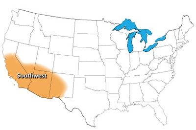
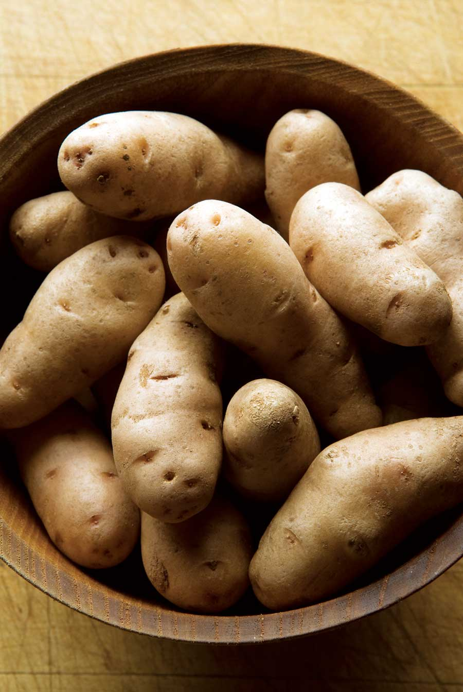

The Southwest’s Top 10 list looks pretty mainstream, but because hot, dry summers split the season in two, many gardeners grow three gardens each year: fast-growing cool-season crops for spring, heat-tolerant veggies for summer, and a feast of fine edibles for fall.
In your garden, this might play out as lettuce, potatoes and onions in spring; tomatoes, beans and peppers in summer; and everything from bulb fennel to mizuna (a popular Asian mustard) in the fall. Tart tomatillos become a versatile vegetable in the hands of good Southwestern cooks (authentic salsa verde is impossible without roasted tomatillos).
This fast-growing tomato relative earned strong ratings from gardeners in this region, and Modesto, Calif., gardener Sandra Burnette says they’re not as invasive as tomatoes, “which will take over the entire garden if left to themselves,” she says.
Edamame (edible green soybean) is a rising star in Southwest gardens, too. Burnette has tried several varieties, and says she has enjoyed them all.
Cabbage family: Kale, kohlrabi
Cucumber family: Cucumber, pumpkin, winter squash
Leafy greens: Arugula, chard, Chinese cabbage, mâche, pac choi, spinach
Legumes: Dry soup bean, edamame, fava bean, snap bean (all types), snow/snap and shell pea, Southern pea
Root crops: Beet, radish, shallot, sunchoke, sweet potato
Tomato family: Eggplant, hot pepper, tomatillo
Miscellaneous: Bulb fennel, leek, okra, rhubarb, scallion
Read The Best Crops for Your Garden to find top crops for other U.S. gardening regions.
|
 NATE SKOW The Southwest gardening region. |
 JENNIFER MAY Reliable potatoes were rated as the No. 1 food garden crop by gardeners in the Southwest. |
|